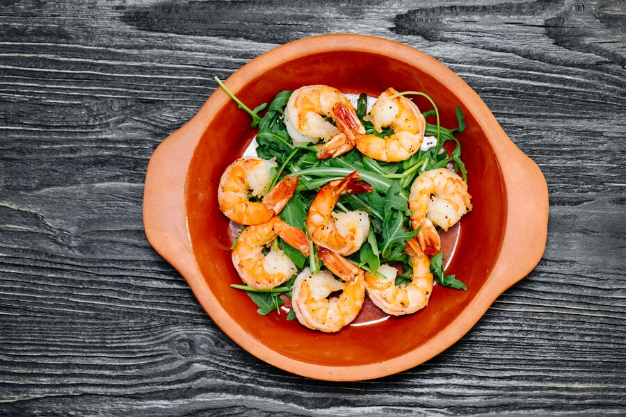

Garlic Butter Shrimps

Description
Garlic Butter Shrimp is a quick and easy dish made by sautéing shrimp in melted butter with garlic,
lemon juice, salt, and pepper until tender and flavorful.
Here's a quick recipe:
Ingredients
- 200g shrimp, peeled and deveined
- 2 tablespoons butter
- 3 cloves garlic, minced
- 1 tablespoon lemon juice
- Salt and pepper to taste
- Fresh parsley (optional, for garnish)
Steps
- Melt butter in a skillet over medium heat. Add garlic and sauté for 1 minute until fragrant.
- Add shrimp, salt, and pepper. Cook for 2-3 minutes on each side until pink and opaque.
- Drizzle with lemon juice and garnish with parsley, if desired.
Enjoy your quick and easy Garlic Butter Shrimp!